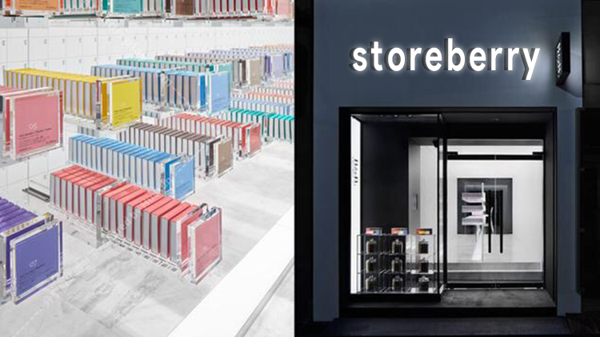

欢迎到光临士哆便利共享商店
介绍士哆便利商店和智能购物技术
在士哆便利，没有排队，没有收银员.你只需要拿了商品然后离开即可。
士哆便利是如何工作
我们的智能购物技术是通过视觉识别、传感器融合以及深度学习的机器来实现的。
我们的科技会自动检测您是否有拿走或是放回商品，之后为您添加至app端内的购物车。当您完成购物便可以直接离开门店，无需排队与等待。稍等片刻，系统自动推送属于您的购物清单，然后您便可选择支付方式完成支付。
士哆便利的货源
我们不仅提供准备好的早、午、晚餐和新鲜的零食，而且还有非常多特色的食品与进口商品供您选择。
我们的小商店能够为您提供大超市的品类，它们的价格都会更加实惠。
每一位供货商都是士哆便利的合作伙伴，士哆便利不赚商品差价，将好品质、低价格的商品交付用户手中。
点此观看Storeberry Go视频介绍